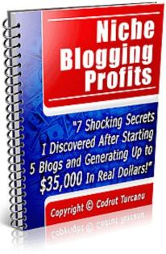
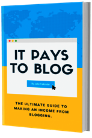
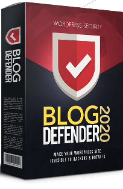
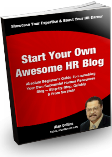

-
Easy Blogging Profit
Discover the biggest secrets to blogging that guarantees a home run success for any blog you create in 2020! Here’s how you can build your blog from scratch and make a full-time living online in as little as 30 days! Discover secrets, real life case studies and tips and tricks you won't find anywhere else! Everything you need is done for you or presented in an easy to follow, step-by-step video tutorials! What's the cost for you to finally live the life you deserve? Join today! You literally have nothing to lose! -

Lazy Blogging
Niche blogging profit windfalls, 7 shocking secrets I discovered after starting 5 blogs and generating up to $35,000 in real dollars if you have already made 35k blogging. Then this is not for you because you probably know most of these "secrets". The fact is that 85% of all the bloggers out there are clues about blog monetization! Did you know that AdSense and affiliate programs are not the best ways to make money blogging? If you think you could make 35k "overnight", this is not for you because you need to understand that it takes time and "testing" to unlock your full blog profit potential with my help you're "guaranteed" to succeed when you never give up! You’ll shortcut your learning curve tremendously and you'll start making money as soon as you implement my cash-generating "blogging strategies! -
Blogger Basics For Newbies
Blogger basics for newbies and learn the secrets. The majority of affiliate marketers are still persistent on making money by frantically posting affiliate links. More bad news is that most of these links aren't even cloaked. Ever wondered how the super affiliate marketers make real money online? Well, not by flooding their social profiles with tsunamis of raw affiliate links I can tell you that. Amid other qualities the majority of these guys, raking in those insane amounts of commissions all have their own blogs. But where do you start? You start by creating a free blog, so you learn your way around WordPress first! You also should only start your blog, once you know where you're going with it. Direction is so much more important than speed. It is of utmost importance that you first discover your profitable niche, and then establish a common need within the particular niche, your profitable niche should actually be something like a hobby. And the reason why that works so well, and created so many internet millionaires, is because a hobby is generally something you enjoy doing most. This training will take you from discovering your profitable niche, teach you how to research and how to use the relevant keywords to reach the right audience. This is the baseline secret of actual online sales. You will have access to 52 pages and 12 chapters with illustration. Your end result will be your own WordPress blog with a google SEO score of no less than 88%. -

It Pays to Blog
A long-term income. On your terms. Follow the simple steps in it pays to blog to create an income-generating blog. Build an online business that will create passive income for years to come! Find your niche profitable niche topics for your blog that you will love writing about! Create your blog step-by-step instructions for creating a stunning, world-class blog. Learn to monetize discover platforms that are generating significant incomes, and determine which will suit you best. Building a profitable blog business isn't rocket science when you have the know-how, making in income from blogging is simple! This comprehensive 220-page guide contains insider knowledge from professionals that have made it big in the blogosphere, to help you and your blog reach the stars. Work from home, by the beach, or anywhere in the world authored by a leading lifestyle blogger to guide you towards experiencing more freedom. Discover how you can launch and maintain your blog, wherever and whenever it suits you. -

Blog Defender
Over 73% of WordPress site owners are risking everything. the #1 killer of your conversions & profits is not what you think! Every day your sites are offline can cost you thousands. Watch the brief video here to secure your profits and leads securing your most valuable online assets can be done in 3 simple steps: follow our hosting security use the tools to identify implement site & recommended host list it’s Matt Garrett here with an important message about your web properties. I don’t release digital products often, so when I do the goal is to save you time and money. Everything I share is based on personal experience and results. Whatever you’ve heard about increasing conversions and sales. Whatever popups, viral software and other methods you’ve got in place none of it matters if your money site gets hacked or compromised. It all comes down to keeping the doors to your business open 99% of success is showing up make sure your sites keep showing up! Regardless of whether or not you feel you need this offer, I’m going to share information on this page that’s critical for you to know. No “fake” pain points or “how I’m like you” hogwash just industry facts that most website owners are simply unaware of and it’s costing them thousands. Did you know over 30 thousand websites are hacked daily over 73% of current WordPress sites are vulnerable to hackers getting hacked can not only compromise your data & profits, but also that of your entire subscriber base - and if that happens, you can face legal and financial charges. -

Success in HR
Take your human resources career to the next level by launching your own HR blog! Discover secrets for starting up your own outrageously successful human resources blog even if you’re an absolute beginner. Step-by-step, quickly & from scratch! Showcase your expertise, gain instant credibility & boost your HR career! Having your own HR blog is an absolute must if you want to take your HR career to the next level. Your own blog allows you to showcase your expertise, gain instant credibility and enhance your HR career. It doesn’t matter where you are in your HR career right now. You can be a newbie just getting started in your first HR job. Or a 10-year HR veteran. Or an experienced specialist in compensation, labor relations and staffing. Or an independent consultant, coach or contract professional. Or a vice president of HR. It just doesn’t matter. Blogging can brand you and sets you apart from the rest of the HR pack. The exposure you get from your blog allows you to be easily contacted by clients, potential employers, hiring managers, headhunters, and others who can help advance your HR career. I’m Alan Collins and I run successinhr.com, a blog dedicated to providing career advice for human resources professionals. Formerly, I was vice president human resources at Pepsi, where i led human resources initiatives for their Quaker oats, Gatorade & Tropicana businesses. -
Solopreneur School
What will you do when your blog makes you money all day and night? What's the catch? There's always a catch, so here it is you are about to get life-changing information that literally took me thousands of dollars and years of trial and error to learn. But i had the courage to take action on it. You are about to get this information for practically pennies, so you may not value it, or act on it because of how easy it is for you to get it now. People are constantly asking "is this a scam?", and i don't understand why they ask when there are so many successful blogs out there, generating cash for people who own them. But here's the thing: "the only difference between what you want and what you have is applied knowledge. The catch is: you're about to short-cut the system and just buy the knowledge from me, but you'll have to apply it yourself. I can't do it for you. When you buy this now, you will either follow directions, or not. If you don't, then you will have scammed yourself. I guarantee the knowledge only- you have to apply it. So stop asking- it's 100% real, and there is tons of proof all over the web.

ADBTC
This website allows you to get free bitcoin. It is better than bitcoin faucet, it is not btc miner, just earn bitcoin online for viewing web pages, mostly bitcoin sites. Internet advertising is evolving and now you have the right to get paid for it! Earn bitcoin online free and withdraw it to your Bitcoin wallet. Buy traffic for your website
More Info...
Promote Your Website Free
EasyHits4U is the most popular traffic exchange program on the Web with over 1,664,000 registered members. Our program allows you to promote your own sites, referral/affiliate links from other programs, banner and text ads to other registered members, and build your own downline here. We have delivered large volumes of traffic to our members' sites since 2003.
More Info...
BestChange
BestChange monitors automatic electronic currency exchangers. The service permanently monitors the largest and most reliable exchangers for you to always know at what exchanger you can exchange one electronic currency for another at the best rate. The exchange rates and currency reserves are updated every 5 seconds for all exchangers in the list.
More Info...